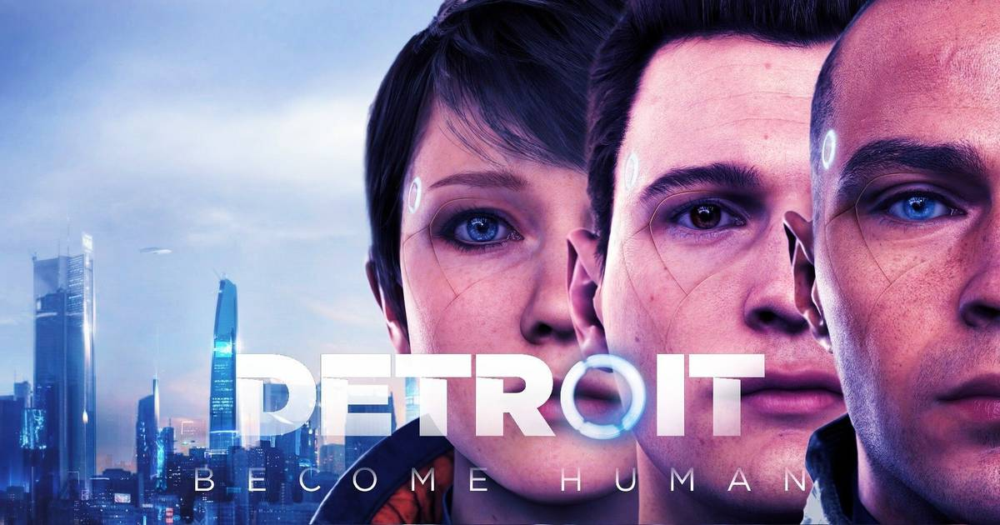
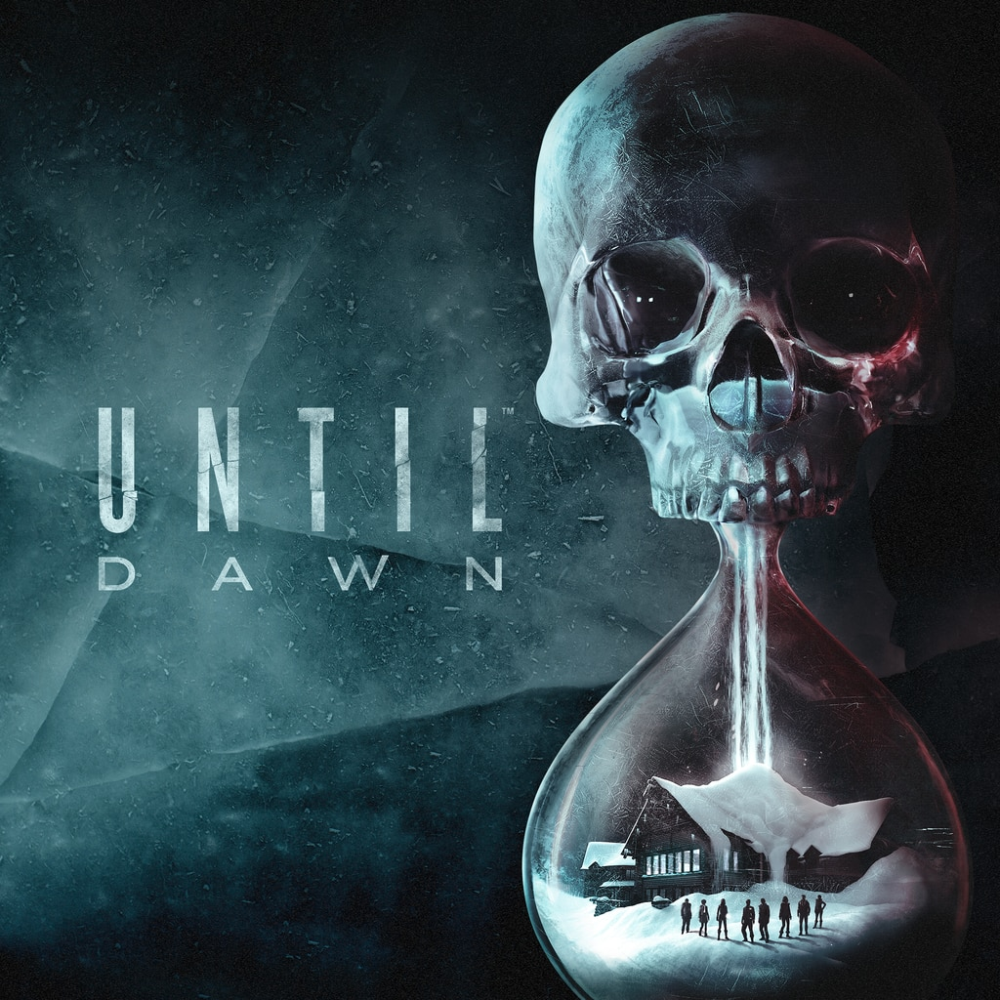
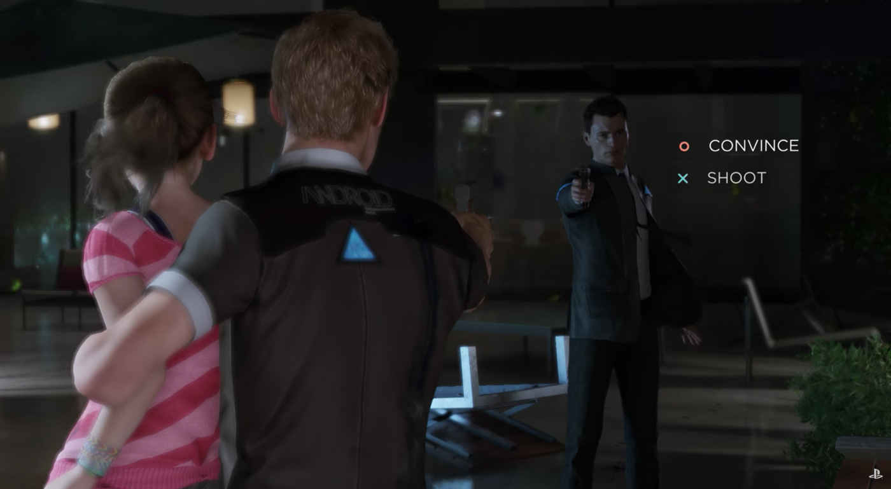

Que es un 'Choose your story'?:
Bueno pues es un tipo de juegos en los que te cuentan una historia pero tu eres el que actua tomando las decisiones nomralmente como personaje principal. Algunos ejemplos son 'Detroit Become Human', 'Until Dawn


Como se juega a un 'Choose your story'?:
La mecanica principal es la toma de deciosiones ya que en base a lo que decidas el juego es capaz de extenderse o de acabar mas rapido ya que dependiendo de las decisiones que tomes pues te encararas hacia un final o otro totalmente distinto

Como lo descargo?:
Pues estas de suerte porque acabamos de sacar nuestra primera release del juego y podras tener acceso descargandola desde nuestro github con este enlace